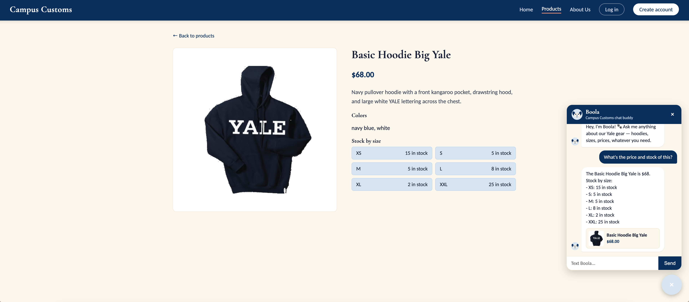
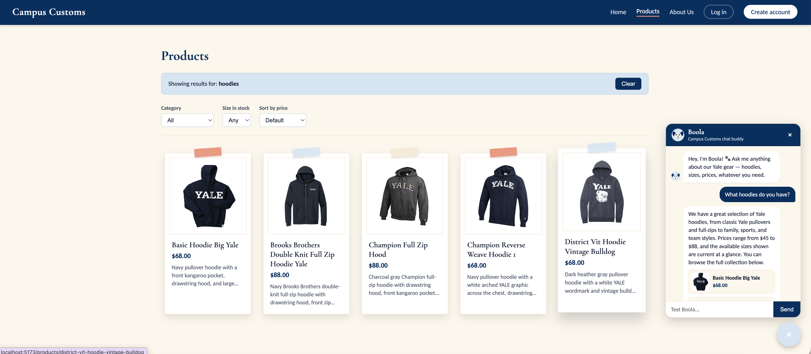
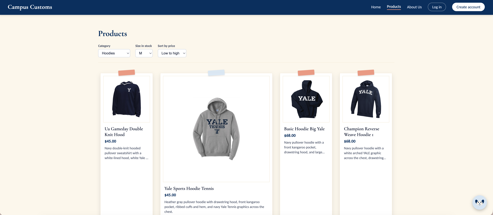

Chat checking inventory

Click to enlarge.
Boola gives the price and stock by size for the Basic Hoodie Big Yale, and every number matches the product page's stock table alongside it — both are reading the same inventory data from the database.
Dynamic search-result cards

Click to enlarge.
After asking Boola "What hoodies do you have?", the Products page grid updates live to show the matching hoodies as product cards under a "Showing results for: hoodies" banner — the chat's search results and the storefront grid are the same data, not two separate systems.
Usability feature: Products page filters and sorting

Click to enlarge.
With Category set to Hoodies, Size in stock set to M, and Sort by price set to Low to high, the grid narrows to only the hoodies actually in stock in medium, cheapest first — confirming the filters and sorting from Problem 9 work correctly together.